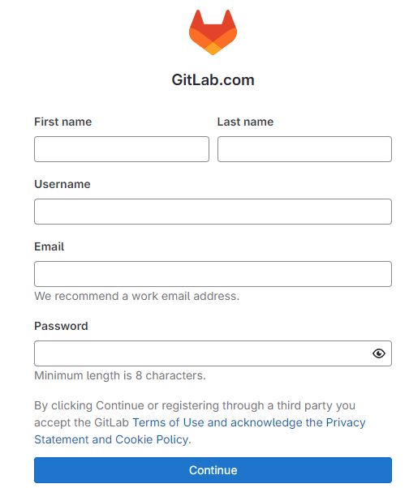

3 Instalação
3.1 Software
Antes de começarmos a trabalhar com DataOps, é importante garantir que temos as ferramentas corretas instaladas no nosso computador.
Neste capítulo, vamos instalar os principais softwares que serão utilizados ao longo do curso: R, Rtools (para Windows), RStudio, Git e Quarto.
Recomendamos seguir as instruções passo a passo e utilizar as configurações padrão durante as instalações, a menos que tenham necessidades específicas.
Instalação do R
R é uma linguagem de programação focada em análise estatística e científica de dados. Vamos utilizá-la para construir scripts e automatizar processos em DataOps.- Link de Download: Download R
- Selecione o seu sistema operacional (Windows, macOS ou Linux) e baixe a versão mais recente do R.
- Siga as instruções do instalador e opte pela instalação padrão.
Instalação do Rtools (para Windows)
Se for utilizador do Windows, precisa instalar o Rtools, um conjunto de ferramentas necessárias para compilar pacotes do R.- Link de Download: Download Rtools
- Faça o download da versão compatível com a sua versão do R. Por exemplo, para o R-4.4.1 deverá ser instalado o RTools 4.4
- Instale seguindo as configurações padrão e certifique-se de marcar a opção para adicionar Rtools ao caminho do sistema (PATH).
Instalação do RStudio
RStudio é um ambiente de desenvolvimento integrado (IDE) que facilita o trabalho com R, Git e Quarto, proporcionando uma interface amigável para escrever e executar código.- Link de Download: Download RStudio
- Baixe a versão mais recente para o seu sistema operacional.
- Execute o instalador e siga as instruções para uma instalação padrão.
Instalação do Git
Git é uma ferramenta de controlo de versões que permite rastrear alterações ao código, colaborar com outros usuários e gerir projetos de forma eficiente. Será fundamental para o gestão dos nossos projetos em DataOps.- Link de Download: Download Git
- Escolha o instalador apropriado para o seu sistema operacional (Windows, macOS ou Linux).
- Durante a instalação, siga as instruções para uma instalação padrão.
Instalação do Quarto
Quarto é uma ferramenta para criar documentos reprodutíveis, relatórios dinâmicos e dashboards, a partir de código R. Iremos utilizá-lo para gerar o dashboard do nosso projetos de forma automatizada.- Link de Download: Download Quarto
- Baixe a versão mais recente e siga as instruções para uma instalação padrão no seu sistema operacional.
Após a instalação, verificamos se o Quarto foi instalado correctamente abrindo o terminal ou prompt de comando e digitando quarto check. Se tudo estiver bem, veremos uma mensagem confirmando que o Quarto está pronto para ser usado.
3.2 Conta GitLab
O GitLab é uma plataforma de gestão de repositórios Git que permite aos desenvolvedores colaborar em projetos de software e/ou de dados.
Além disto, o GitLab fornece recursos avançados de gestão de projetos, como acompanhamento de tarefas, gestão de backlog e integração com kanban, que podem ser muito úteis em projectos de DataOps.
Uma alternativa popular ao GitLab é o GitHub. Os participantes que prefiram esta segunda opção poderão continuar a acompanhar o curso sem grandes entraves.
3.2.1 Como Criar uma Conta no GitLab
Se ainda não tivermos uma conta no GitLab, podemos aceder ao site do GitLab.
Na página inicial, clicamos no botão Sign In (Registrar) no canto superior direito.
Depois de irmos para Register now, podemos preencher o Formulário de registo:

Após preenchermos todas as informações, clicamos em botão “Continue” (continuar).
- Verificamos o E-mail:
Receberemos um e-mail com um código de verificação. Introduzimos o código na página do GitLab para activar a conta.
- Configuramos o nosso Perfil:
Após verificarmos a conta, podemos fazer a configuração do nosso perfil, adicionando uma foto e informações adicionais, se assim o desejarmos.
3.3 Configurar RStudio
Instalado o software e criada a conta no GitLab, podemos agora fazer algumas configurações no RStudio, de onde teremos acesso não só ao R, ao Git e ao Quarto mas também ao GitLab.
3.4 Verificação de aprendizagem
O que é o GitLab?
Qual é a principal alternativa ao GitLab que foi mencionada?
3.5 A seguir
Agora que instalamos todas as ferramentas necessárias, estamos prontos para começar a explorar como as podemos usar nos nossos projectos em DataOps. No próximo capítulo, iremos introduzir os conceitos básicos de controlo de versões com o Git e começar a configurar o nosso primeiro repositório.